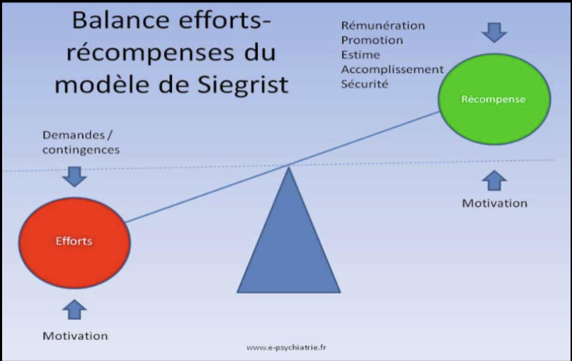

Modèle de Siegrist, déséquilibre efforts récompenses
Table des matières
L'essentiel : Siegrist dit que le stress vient quand un travailleur donne plus qu'il ne reçoit en retour. Les efforts (charge, heures, engagement) doivent être équilibrés par les récompenses (salaire, reconnaissance, sécurité d'emploi, perspectives). Quand le déséquilibre persiste, surtout chez les travailleurs « surengagés », la santé se détériore. C'est le modèle complémentaire de Karasek : où Karasek regarde le contrôle, Siegrist regarde la justice du contrat travail-récompense.
Définition
Modèle du déséquilibre efforts-récompenses (Effort-Reward Imbalance, ERI (source interne)) : cadre développé par Siegrist 1996 p. 27 pour expliquer le stress professionnel par un déséquilibre dans le contrat implicite entre le travailleur et son employeur.
Le travailleur fournit des efforts (extrinsèques liés au poste, intrinsèques liés à son engagement). En contrepartie, il reçoit des récompenses sous trois formes : matérielles (salaire, primes), de statut (sécurité d'emploi, perspectives) et d'estime (reconnaissance, respect).
Quand le ratio efforts/récompenses penche durablement du mauvais côté, la santé se dégrade. Le modèle ajoute une dimension individuelle : le surengagement (overcommitment), qui amplifie les conséquences.
Pour un superviseur en mine : Siegrist explique pourquoi un travailleur bien payé peut quand même craquer. Le salaire est une seule des trois récompenses. Sans reconnaissance ni perspectives, le contrat reste déséquilibré.
Modèle
Trois composantes
| Composante | Définition | Exemples concrets |
|---|---|---|
| Efforts extrinsèques | Demandes du poste | Cadence, heures supplémentaires, interruptions, charge physique |
| Récompenses | Trois formes | Salaire, sécurité d'emploi, perspectives de carrière, reconnaissance, respect, statut |
| Surengagement (intrinsèque) | Tendance personnelle à se donner au-delà du raisonnable | Difficulté à décrocher, besoin d'approbation, incapacité à dire non |
Formule du déséquilibre
Siegrist propose un ratio ERI = (efforts) / (récompenses × facteur de pondération). Un ratio > 1 indique un déséquilibre.
Le surengagement amplifie l'effet du déséquilibre : un travailleur surengagé exposé à un déséquilibre subit des conséquences plus lourdes qu'un travailleur normalement engagé.
{kind=link}

Toucher l'image pour l'agrandirBalance des efforts-récompenses selon Siegrist. Source : SST1010 (UQAM), séance 4. Usage personnel.
Conséquences documentées (méta-analyses de Kivimäki et al., Siegrist 2017)
- Risque accru de maladies cardiovasculaires
- Symptômes dépressifs et anxieux
- Burnout (source interne)
- Absentéisme prolongé
Mesure
Instrument recommandé : Effort-Reward Imbalance Questionnaire (ERI), Siegrist 1996, version courte révisée 2009.
| Élément | Détail |
|---|---|
| Nombre d'items | 23 (version standard) ou 16 (courte) |
| Échelle | Likert 4 ou 5 points |
| Sous-échelles | Efforts (6 items), récompenses (11 items), surengagement (6 items) |
| Score-clé | Ratio ERI (> 1 = déséquilibre) |
| Durée d'administration | 10 minutes |
| Source | Siegrist (2009, version révisée) |
Quand l'utiliser
- Diagnostic d'équipe ou de département
- Identifier des problèmes de reconnaissance invisibles aux indicateurs RH classiques
- Compléter un diagnostic JCQ Karasek (source interne) : les deux modèles capturent des dimensions différentes
Quand ne pas l'utiliser
- Pour évaluer la santé d'un individu (utiliser PHQ-9 (source interne), K10 (source interne))
- Sans contexte d'action : un diagnostic ERI sans plan de réponse crée des attentes non comblées
Application en mines
Configurations à risque ERI élevé en mine
| Configuration | Pourquoi déséquilibre |
|---|---|
| Travailleurs sous-traitants | Salaire parfois équivalent, mais perspectives nulles, sécurité d'emploi faible, reconnaissance externe absente |
| Postes de relève sans titularisation | Efforts égaux aux titulaires, récompenses (avantages, ancienneté) inférieures |
| Métiers spécialisés en pénurie | Sollicités constamment, peu de marge pour récupérer, reconnaissance souvent uniquement monétaire |
| Postes de supervision intermédiaire | Pression descendante et ascendante, marge décisionnelle faible, perspectives de progression bouchées |
Spécificité minière : la dimension « salaire élevé » masque souvent les autres dimensions. Un employeur peut croire que les hauts salaires compensent tout ; le modèle Siegrist montre que non. Reconnaissance et perspectives comptent autant.
Surengagement et culture minière
La culture du « tough guy » et la fierté du métier peuvent encourager le surengagement. Les travailleurs qui se définissent par leur travail sont plus exposés au déséquilibre quand les récompenses non monétaires manquent.
Prévention
| Levier | Action concrète | Responsable |
|---|---|---|
| Reconnaissance | Rétroaction régulière, valorisation des compétences, programme de reconnaissance des pairs | Superviseur, direction |
| Perspectives | Plans de carrière, formations, mobilité interne | RH, direction |
| Sécurité d'emploi | Stabilisation des contrats, réduction de la sous-traitance précaire | Direction |
| Justice procédurale | Transparence dans les décisions, équité dans l'attribution des opportunités | Direction, RH |
| Surengagement | Sensibilisation, droit à la déconnexion, gestion des heures supplémentaires | Direction, conseiller SST |
Un programme structuré de reconnaissance non monétaire (rétroaction systématique, valorisation publique, mobilité interne) réduit significativement les scores ERI sans augmenter la masse salariale.
Cadre légal
- LMRSST : la reconnaissance et l'équilibre efforts-récompenses font partie des dimensions à identifier dans le programme de prévention.
- CNESST : le manque de reconnaissance et le déséquilibre ERI sont reconnus comme RPS dans la grille INSPQ.
- Lien : ⚖️ Index LMRSST, CNESST
Documents et outils
| Document | Type | Source |
|---|---|---|
| Questionnaire ERI, version française (16 ou 23 items) | Instrument PDF | Université Düsseldorf, INSPQ, vault SST1010 |
| Algorithme et grille d'interprétation Siegrist | PDF technique | INSPQ |
| Validation francophone du questionnaire ERI | Article académique PDF | INSPQ |
| Grille INSPQ d'identification des RPS (intègre Siegrist) | PDF gratuit | INSPQ |
| Site officiel ERI, Université Düsseldorf | Source primaire | uniklinik-duesseldorf.de |
Voir le centre de ressources : 📁 Documents et outils.
Pour aller plus loin
Références
- Siegrist 1996 p. 27. Adverse health effects of high-effort/low-reward conditions. Journal of Occupational Health Psychology, 1(1), 27-41.
- Siegrist, J. et al. (2004). The measurement of effort-reward imbalance at work. Social Science & Medicine, 58(8), 1483-1499.
- Siegrist, J. (2017). The effort-reward imbalance model. In The Handbook of Stress and Health.
- Kivimäki, M. et al. (2007). Effort-reward imbalance, organisational injustice and health. *American Jour